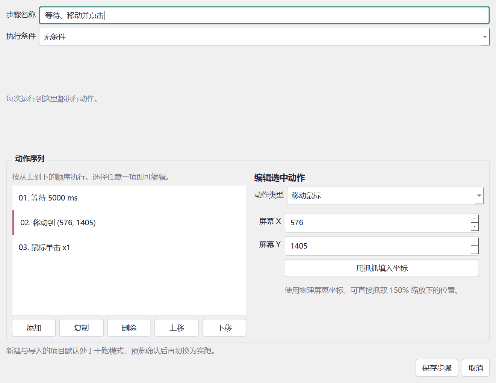

個人開発実アプリの保存済み開発スクリーンショット。操作列の編集画面で、ゲーム画面・アカウント情報・ローカルファイルパスを含まない画像を選びました。
VisionAuto2 視覚自動化ツール
繰り返す画面操作を、条件に合わせて自動化したい。AIを開発に活用し、文字・画像の認識と操作列の編集をまとめたツールを制作しました。

Why I started
取り組んだきっかけ
繰り返しの操作を、確認しながら任せられる道具にしたい。
既存のマクロツールの使いにくさから、複数のスクリプトをGUIで整理し、特定の文字や画像が現れたときに操作するツールを制作しました。
What I cared about
大切にしたこと
- 自分で見通せる操作
- 複数のスクリプトをGUIで整理し、何を認識して、どの操作をするのかを確認できる形にしました。
- 認識と入力を分ける
- 座標ずれを調べる際は、取得範囲と認識結果、実際の入力先を分けて考えました。画像照合が不安定な場合は文字認識も検討しました。
- 試す前に確認できること
- 実行前の確認や停止用ショートカットを整え、いきなり操作を走らせない流れを意識しました。
Results & learning
結果と学んだこと
OCR、画像照合、条件付き入力、プロジェクト管理を統合したデスクトップツールを制作しました。日常の利用で座標や操作性の問題を改善しました。
実際に使って見つかる座標ずれや認識の問題を、原因ごとに切り分ける経験になりました。便利さと、操作を確認・停止できることの両方が必要だと考えています。
自分の担当と、生成AIの活用
要求整理、GUIとプロジェクト形式の設計判断、認識や座標の問題分析、AI生成実装の評価と検証。
実装補助に生成AIを活用し、認識方法や座標ずれの原因を評価しながらテストと実操作で改善しました。
取り組みの詳細
共通形式に整理する
プロジェクトと編集可能な操作列を共通化し、OCR・画像・色の条件を扱えるようにしました。
認識と入力を分ける
画面取得の範囲、座標、認識結果と実際の入力先を分けて確認しました。
確認と停止を整える
実行前の確認、プレビュー、停止用ショートカットを用意し、安全に試せる流れを考えました。
掲載資料と現在の課題
バックグラウンド入力は対象との相性に依存する試験機能です。任意のゲームや画面での確実な認識は保証しません。掲載画面は過去の開発記録で、新しい性能測定ではありません。
実アプリの操作列エディターを使用。認識結果を模した展示用の画面は使用していません。